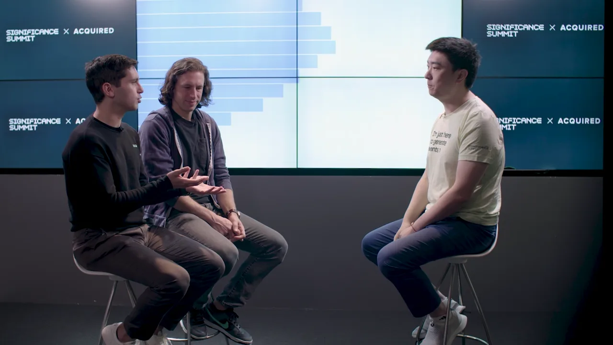
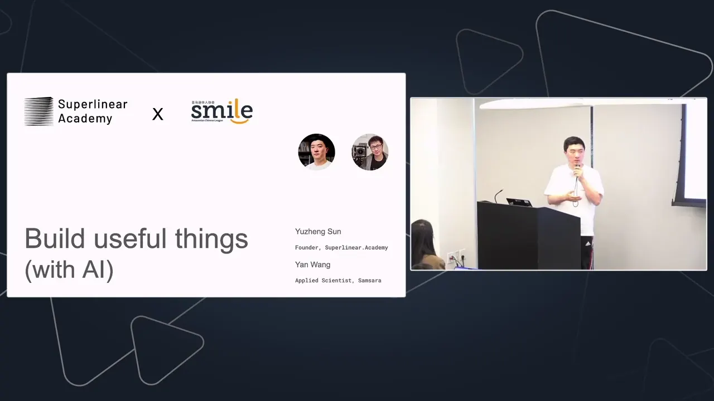

履历从研究、大厂到创业，一路离真实的用户和结果越来越近
- 康奈尔大学经济学博士
- Amazon经济学家
- Meta数据科学家
- 腾讯IEG增长数据科学与AI总监
带领30人团队 - StatsigPrincipal数据科学家
OpenAI收购团队早期成员 - 超线性学院创始人 · 全职投入
超线性学院 · 我们在建一座城
不怕AI天天变，
就来超线性学院。
超线性学院是一个免费的AI社区。工程师、产品经理、研究者、创业者和各行各业的人，把自己用AI做的东西拿到这里，互相给真实的反馈。为什么说是一座城？
AI问答
问问立正
卡住的时候，先来这里问。AI主要依据我写过、讲过的内容回答，每一段都能点回原文。
打开完整页面 →
书
想清楚的事，
写成了书。
一本讲假工作、假学习和AI时代什么会留下来；一本写给想靠能力、而不是靠头衔立足的人；一本写给做产品和增长的人。
公开判断
先把判断写下来，
再让时间检验。
说对的，说错的，都留在原处，每一条都附上当时的原始记录。
- 2021.04
上一代AI的天花板在哪里
主流的机器学习从标注数据里学“对应关系”，能把窄场景自动化得很好，但不会因此获得对世界的通用理解。选AI应用，要看机制和任务结构，而不是benchmark上的表演。
- 2023.02写于GPT-4发布前
关于ChatGPT最重要的五个问题
ChatGPT是“自然语言计算机”，是人类调用数据与算力的近乎完美的形态。
从机制推演了推理成本会大幅下降、长期记忆与个性化、连接工具的工作流、直接交付结果，以及围绕ChatGPT重建的系统。在中文互联网广泛传阅。
原始记录 - 2025.01
2025年，AI最大的机会是Agents
Agentic AI是近期最重要的变化。从2025年初开始，先行者大约有10到18个月的窗口期。
- 2025.03
MCP有结构性缺陷
MCP的热度超过了它能可靠交付的东西，协议本身有重大的结构性问题。
原始记录 - 2026.03
为什么OpenClaw一定会凉，但仍然值得一试
这个产品品类不会持久；但亲手试一试，能帮你理解这一轮能力变化。
原始记录 - 2026.09如何判断炒作
通过Jev，辨清AI新技术的叙事陷阱
判断一项新技术是不是炒作，最要紧的是找到真正的对标：它最好的替代方案是什么。
新技术常先让你接受什么才算“厉害”，再证明自己厉害。五层判断帮你跳出叙事陷阱：理解技术、明确边界、拿回评价标准、找到真正合理的比较对象，再判断这个问题值不值得投入。
文章
最近在想的事
在教学、访谈和做产品的过程中，反复遇到的问题。每篇都尽量讲到能被检验的程度。
加入超线性学院
三种方式，
走进这座城。
从免费社区开始。想系统地学，选AI Builders；想长期跟上变化，加入Stay Superlinear会员。

企业AI培训与定制团队购课、专属班、课程定制。完整定制企业AI项目$100,000起
与鸭哥一起为Amazon团队分享：Build useful things (with AI)